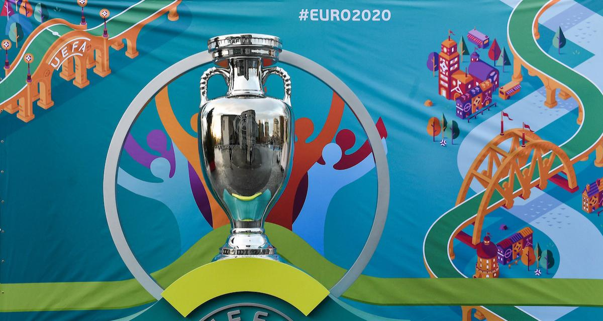

Coupe d'Europe

Le championnat d'Europe de football est une compétition européenne entre les meilleures sélections nationales masculines de football, organisée par l'Union des associations européennes de football (UEFA). Imaginé dès 1927 par Henri Delaunay, il est créé
en 1960 sous le nom de Coupe d'Europe des nations et se déroule tous les quatre ans, alternant les années paires avec la Coupe du monde. Il est rebaptisé Championnat d'Europe des nations en 1968, pour marquer l'introduction d'une phase préliminaire par poules, et Euro depuis 1996.
Des compétitions équivalentes existent dans les cinq autres unions continentales. Sur le plan sportif, l'Euro est considéré comme la plus importante compétition entre nations, après la Coupe du monde, en raison du nombre et du niveau des équipes européennes.
Le Portugal a remporté la 15e édition (du 10 juin au 10 juillet 2016 en France). La 16e, l'Euro 2020, a été reportée en 2021 en raison de la pandémie de Covid-19.
Historique
En 1927, le secrétaire général de la Fédération française de football, Henri Delaunay, émet l'idée d'organiser une compétition continentale sur le territoire européen, mais l'idée n'aboutit pas en l'absence d'une organisation européenne. En 1954, l'UEFA voit le jour et décide d'étudier ce projet. Elle annonce que la première édition aura lieu en 19602. La première Coupe d'Europe des nations débute sous un format classique de coupe à élimination directe où les équipes s'affrontent en matchs aller-retour, à commencer par un tour préliminaire (dont sont exemptées un certain nombre d'équipes en fonction du nombre total d'inscrits), suivi de huitièmes de finale et quarts de finale. Les quatre demi-finalistes issus de cette première phase décident d'un pays hôte pour y disputer le tournoi final comprenant les demi-finales (sur un match), le match de la troisième place et la finale. En 1960, seulement dix-sept nations (aucune britannique) participent à la première édition qui s'achève en France. La finale, jouée à Paris, est remportée 2-1 par l'URSS emmenée par Lev Yachine face à la Yougoslavie après prolongation. L'URSS devient ainsi la première nation à inscrire son nom au palmarès3. Il s'agit de son seul trophée continental4. On note que le quart de finale entre l'Espagne et l'URSS fut controversé. Aucun des deux matchs prévus n'eut lieu, les Espagnols, par l'intermédiaire de Franco, refusant de rencontrer l'équipe soviétique. L'URSS se qualifia donc par forfait pour le dernier carré. Lors de la seconde édition, en 19645, la compétition est de nouveau perturbée par des enjeux politiques, en effet, la Grèce refuse d'affronter l'Albanie en raison d'un conflit entre les deux nations. La phase finale a lieu en Espagne où la sélection ibérique bat son homologue soviétique, tenante du titre , 2-1 à Madrid devant 125 000 spectateurs.
L'Euro 2016 se déroule en France avec 24 nations pour la phase finale. Dans une interview donnée au journal France Football du mardi 30 novembre 2012, Jacques Lambert le président du comité d'organisation a statué sur le format de la compétition, Lors du premier tour il y a six groupes de quatre équipes dont les deux premières sont qualifiées pour les huitièmes de finale, ainsi que les quatre meilleurs troisièmes17. Le Portugal profita de ce format pour être le premier 3e de poule d'une compétition à remporter le sacre, face au pays organisateur.